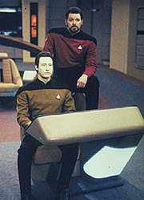
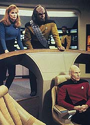
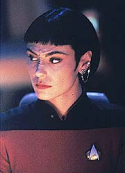
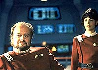

|
MANCHETE
DO EPISDIO
Execuo
magistral faz de high concept
um dos melhores episdios da srie
Episdio
anterior | Prximo
episdio
Sinopse:
Data Estelar: 45652.1.
Enquanto jogava pquer com Riker, Data e Worf, uma estranha sensao
de dj vu ajuda Beverly a pagar o blefe de Will. Ele ento
chamada enfermaria para examinar Geordi, que est sofrendo de
tonturas. Quando ela vai para a cama, naquela noite, assombrada
por estranhas vozes em seus aposentos. A nave continua a mapear a
Expanso Typhon, uma regio do espao previamente inexplorada, at
que um campo de distoro subitamente flutua, os sistemas
principais de propulso entream em colapso, e a Enterprise
atirada em um alerta vermelho, em curso de coliso com uma velha
nave, que apareceu do nada. Riker recomenda a descompresso do
hangar de naves auxiliares, mas Picard segue o conselho de Data e
usa o raio trator para alterar a trajetria da outra nave.
Infelizmente, essa opo fracassa, a nave colide, explode e
totalmente destruda.
 Mais
tarde, Riker, Data, Worf e Beverly esto jogando cartas novamente,
e tanto Riker quanto Beverly percebem que sabem o que vai acontecer
depois. Beverly novamente chamada enfermaria, quando ela e
Geordi experimentam sensao de dj vu. Quando ouve as vozes em
seu quarto, ela imediatamente vai at Picard e conta que algo
estranho est acontecendo. Ele decide ordenar a execuo de um
diagnstico. Na manh seguinte, enquanto discutem os resultados da
pesquisa, a nave antiga novamente aparece, e mais uma vez a
Enterprise destruda.
O jogo de cartas est novamente acontecendo, mas dessa vez todos os
jogadores percebem que sabem as cartas que viro. Beverly antecipa
que ser chamada enfermaria, e quando Geordi novamente se diz
com tonturas, ela vai a Picard e repete sua exposio de que algo
estranho est ocorrendo. Ela ouve as vozes em seu quarto, mas dessa
vez as registra em seu tricorder. A gravao estudada, e Data
conclui que as estranhas vozes so as de toda a tripulao.
Beverly e Geordi percebem que esto presos em um lao de
causalidade --uma dobra temporal que faz com que eles repitam
indefinidamente o mesmo fragmento de tempo. Esse fenmeno est
causando as tonturas de Geordi, e Data descobre que ele tambm
explica as vozes gravada, que seriam "ecos" de um loop
anterior. Ele separa certos dilogos na gravao que indicam que
a Enterprise sofreu um coliso com outra nave, explodiu e ficou
presa na dobra temporal. Percebendo que o que quer que faam para
evitar a coliso ser provavelmente o mesmo que j fizeram antes,
Data decide que a nica esperana enviar uma mensagem
deliberada ao prximo lao. Eles se preparam para enviar a
mensagem, o alerta vermelho soa novamente, e a nave destruda.
 Outro
jogo de cartas se inicia, mas desta vez, as cartas so diferentes,
com vrias aparies do nmero trs. Coisas continuam a
acontecer apontando o trs, e o nmero visto em todo lugar sem
razo aparente. Alm dessa diferena, todo o resto acontece como
antes. Quando o alerta vermelho comea, Picard escolhe o conselho
de Data sobre o de Riker. No ltimo minuto, entretanto, Data nota
os trs pininhos no uniforme do primeiro-oficial e, percebendo que
"trs" foi a mensagem que teria enviado a si mesmo do
loop anterior, ele pe em curso a idia de Riker e evita a coliso.
A tripulao contatada pela outra nave, a USS Bozeman, que
acredita ainda estar em 2278. A Enterprise contata o Comando da
Frota Estelar, que avisa que Picard e sua tripulao passaram 17
dias no lao temporal. A Bozeman ficou presa por 90 anos.
Comentrios:
"Cause
and Effect" um episdio de simplicidade mpar. Uma
sequncia de eventos que se repete vez aps vez, aps uma concluso
catastrfica. O objetivo da tripulao tem de ser escapar do lao
temporal. Simples assim.
A simplicidade da histria, entretanto, se paga nos detalhes.
Quanto mais modesto um enredo, mais importante se torna o modo
pelo qual ele executado. Neste episdio, a execuo tudo. O
mrito, portanto, pelo grande sucesso do segmento vai para o
diretor, no caso Jonathan Frakes, e para os atores, que souberam
interpretar realisticamente a infindvel sequncia de eventos,
sempre iguais, mas sutilmente diferentes.
 A
variao das cmeras tudo. Frakes busca alguns ngulos pouco
usuais para causar a sensao de repetio, mas ainda assim
diferenciando a cena de sua anloga de loops anteriores. Alm de
transmitir melhor a sensao de que os eventos acontecem vrias
vezes (e no uma vez s reprisada ad eterno), a troca de ngulos
ajuda a no cansar o telespectador com as reprises.
Justamente pelos sutis diferenciais entre cada uma das repeties,
algumas repeties aparentemente inevitveis tornam-se ainda mais
pronunciveis. O exemplo mais consistente e marcante o de
Beverly derrubando seu copo (embora Gates McFadden faa uma fora
sobre-humana para quebr-lo em uma das vezes, no que
provavelmente a mais tomada do episdio, em razo da falta de
realismo).
Tambm muito bem feito o clmax da histria. Embora o "trs"
j se pronuncie claramente desde o incio como a mensagem vinda do
loop anterior, seu contedo to cifrado que consegue manter o
telespectador no escuro at o ltimo momento. Melhor ainda, a cena
que revela a significao da mensagem executada de maneira
perfeita. Alm de dar a impresso que ser novamente inevitvel
a coliso, ela permite que o telespectador faa a descoberta que
ir salvar a Enterprise junto de Data. Em vez de uma explicao
pattica do andride, o que tiraria totalmente o clmax da cena,
temos apenas um zoom na gola de Riker. Movimento brilhante.
 Do
ponto de vista lgico, os saltos temporais transcorrem com razovel
tranquilidade, sem nenhum paradoxo insolvel pela frente. A nica
coisa que incomoda em qualquer episdio envolvendo viagem no tempo
a falta de critrio para o processo. No consigo entender como
a Enterprise pode ficar repetindo o mesmo trecho do tempo infinitas
vezes enquanto o resto do Universo segue em frente. Mas o bonito de
segmentos desse tipo justamente isso: a coisa to
especulativa que nem preciso ficar pensando muito sobre
potenciais explicaes ou qualquer falta de coerncia.
Ou seja, um prato cheio para Brannon Braga, que acertou em cheio
desta vez. Alm de possuir dilogos interessantes e bem escritos,
o roteirista conseguiu fazer excepcional uso de um "high
concept" potencialmente tedioso. Mais uma vez, ao roteirista
cabe apenas o mrito da idia --a qualidade do produto final recai
totalmente sobre a produo.
Os efeitos visuais cumprem bem o seu papel, especialmente no momento
da coliso das naves. Somente a exploso da Enterprise-D deixa a
desejar, deixando transparecer que trata-se ali de um modelo, e no
uma espaonave de verdade.
Citaes:
Riker - "Sometimes
I wonder if he's stacking the deck."
("Algumas vezes penso se ele no est arrumando o
baralho.")
Data - "I assure you, commander, the cards are sufficiently
randomized."
("Eu garanto, comandante, que as cartas esto em ordem
suficientemente aleatria.")
Worf - "I hope so."
("Espero que sim.")
Data - "8, Ace, Queen, the dealer receives a 4."
("8, s, Dama, o distribuidor recebe um quatro.")
Worf - "No Bet."
("Sem aposta.")
Data - "10, 7, no help there. Pair of ladies for the doctor.
Dealer receives a 9."
("10, 7, no ajuda a. Par de damas para a doutora.
Distribuidor recebe um 9.")
Trivia:
 Kelsey Grammer, o ator principal da famosa srie americana "Frasier",
faz uma participao neste episdio como o capito Morgan
Bateson, da USS Bozeman. Grammer tambm trabalhou na srie
igualmente famosa "Cheers", que contava ainda com Kirstie
Alley, a Saavik de "Jornada nas Estrelas II", no
elenco. Na cena final do episdio, quando o capito Bateson
aparece na ponte de comando da Bozeman, a idia inicial seria de
colocar Kirstie Alley como Saavik ao seu lado, como a
primeira-oficial da nave. Mas a agenda da atriz, que estrela
atualmente sua prpria srie, "Veronica's Closet",
estava cheia, no foi possvel realizar o encontro.
Kelsey Grammer, o ator principal da famosa srie americana "Frasier",
faz uma participao neste episdio como o capito Morgan
Bateson, da USS Bozeman. Grammer tambm trabalhou na srie
igualmente famosa "Cheers", que contava ainda com Kirstie
Alley, a Saavik de "Jornada nas Estrelas II", no
elenco. Na cena final do episdio, quando o capito Bateson
aparece na ponte de comando da Bozeman, a idia inicial seria de
colocar Kirstie Alley como Saavik ao seu lado, como a
primeira-oficial da nave. Mas a agenda da atriz, que estrela
atualmente sua prpria srie, "Veronica's Closet",
estava cheia, no foi possvel realizar o encontro.
Originalmente o plano dos produtores seria de ter como a USS Bozeman
uma nave da classe Constitution, a mesma da Enterprise da Srie
Clssica. Porm os gastos para fazer uma nova maquete, cenrios
e figurinos como os da srie original seriam muito caros e outra
boa idia para o episdio no pde ser realizada.
Ao
final de tudo, a USS Bozeman uma verso da USS Reliant de "Jornada
nas Estrelas II". Mas, ao contrrio da Reliant, que era da
classe Miranda, a Bozeman da classe Soyuz. Soyuz, para quem no
sabe, o principal veculo espacial de transporte humano dos
russos, j em operao h mais de duas dcadas.
"Cause
and Effect" consta na lista dos 25 melhores episdios da Nova
Gerao de todos os tempos.
Este foi o quarto episdio da srie dirigido por Jonathan Frakes,
o William T. Riker. O prximo episdio com sua direo ser "The
Quality of Life", da sexta temporada.
Michelle Forbes est de volta como a alferes Ro Laren neste episdio.
Sua ltima participao havia sido em "Power
Play". Michelle voltar a aparecer no episdio "The
Next Phase", ainda nesta temporada.
Ficha
tcnica:
Escrito por Brannon Braga
Direo de Jonathan Frakes
Exibido em 23/03/1992
Produo: 118
Elenco:
Patrick Stewart como
Jean-Luc Picard
Jonathan Frakes como William Thomas Riker
Brent Spiner como Data
LeVar Burton como Geordi La Forge
Michael Dorn como Worf
Gates McFadden como Beverly Crusher
Marina Sirtis como Deanna Troi
Elenco convidado:
Michelle Forbes
como alferes Ro Laren
Patti Yasutake como enferemeira Alyssa Ogawa
Kelsey Grammer como capito Morgan Bateson
Episdio
anterior | Prximo
episdio
|